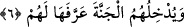
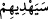
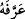
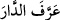

Allah Teâlâ dünyada “onları doğru yola” işlerin en doğrusuna “iletecek ve” âhirette
de “durumlarını” sevaba sevk ederek “düzeltecektir.”
Hasan bin Ziyâd’a göre Allah Teâlâ onları münker ve nekîr olarak bilinen kabirdeki
sorgu meleklerinin suallerine doğru cevap vermeye muvaffak kılacaktır.
Âyetin delâletinden anlaşıldığına göre şehitlere sorgu sual yoktur.
Elbette Allah Teâlâ, kendilerini kötülüklerden koruyarak ve hayırlı amellere muvaffak
kılarak “onların hallerini düzeltecektir.”
kelimesinin başındaki “sin” harfi teyid içindir.
Bu kullar cihad ve şehidlik sebebiyle Allah katında pek değerli oldukları için onları
uhrevî maksadlarına ulaştıracak ve arzularını gerçekleştirerek onların hâlini
düzeltecektir.
6. Onları, kendilerine tanımladığı cennete sokacaktır.
“Onları, kendilerine” dünyada evsaf ve niteliklerini “tanımladığı” ve onların çok
arzuladıkları yahut sanki yaratıldığından beri oradaymış gibi herkesin kendi mevki ve
makamını bilip gideceği “cennete sokacaktır.”
Hadis-i şerifte şöyle buyrulmaktadır: “Elbette sizden biriniz cennetteki menzil ve
makamını dünyadaki menzilinden daha iyi bilecektir.”
Müfredat’da  (arrefehu) fiilinin, “onu güzel koku ile kokulandırdı” anlamına
geldiği kaydedilmektedir. Buna göre mânâ: “Allah Teâlâ cenneti süsleyip kokulandırdı”
demek olur.
Bazıları âyete; “Allah cennetin sınırlarını belirleyip sahipleri için ayırdı” mânâsını
vermişlerdir. Bu, Arapların, “evin sınırlarını belirledi” anlamındaki  (arrefe’d
dâre) ifâdesinden alınmıştır. Buna göre, herkesin cennetinin sınırları çizilmiş kimin
hangisine gideceği belirlenmiştir.
Şehidlerin fazîletlerine dâir şöyle buyrulmaktadır: Cennete giren hiçbir kimse, şu
dünya içindekilerle birlikte kendisine verilse bile oradan çıkmayı sevmez ve istemez.
Yalnız şehid bundan müstesnâdır. Bu insan, şehidlerin Allah katındaki büyük mevkiini
gördüğü için Allah Teâlâ’nın kendisini tekrar tekrar dünyaya döndürerek ilk seferde
olduğu gibi yine öldürülüp şehîd edilmeyi temennî eder.
Yine şehidlerin fazîletlerinden olarak şehidlik Allah ile kul arasında olan ve Allah
hakkı olarak bilinen günahları örter ve siler. Hadis-i şerifte şöyle buyrulmaktadır:
“Borcu dışında şehidin bütün günahları bağışlanır.” Borçtan murad gasb, bâtıl
yollarla alınan mal, haksız yere adam öldürme, yaralama ve benzeri tüm kul haklarıdır.
Yine gıybet, koğuculuk, alay etme ve benzerleri bütün bu haklar hak sahiplerine
ödenmelidir.